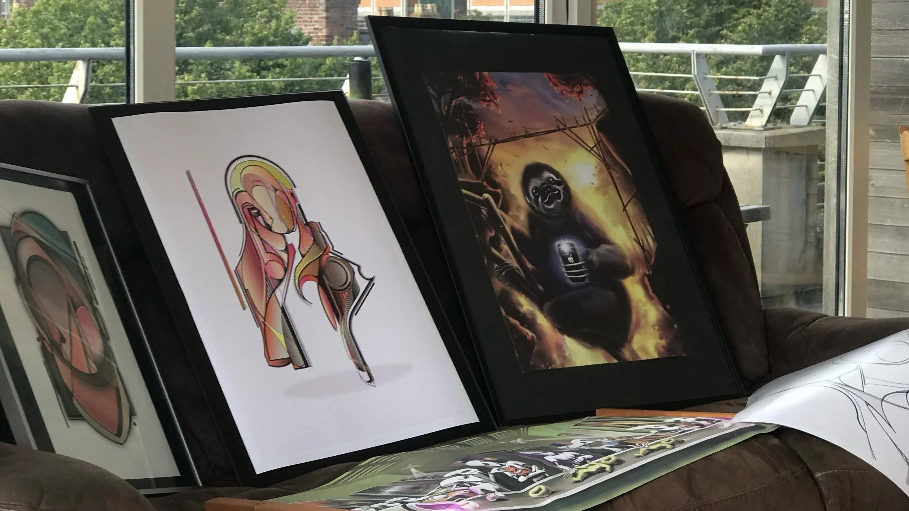

A private studio in Ballsbridge where tattooing is treated as a fine art form.

14/09/2022 · First public exhibitionAppreciart started with Thiago Moreira — tattoo artist and founder. The goal was specific: build a space in Dublin where tattooing sits alongside fine art, not below it.
With Matheus Souza handling the digital side, the first steps were exhibitions — Dublin, then the Louvre, then World Art Dubai. What began as a series of events became a studio.
The spaces double as galleries — work on the walls, artists in residence, collectors passing through.
Alongside tattooing, Appreciart is moving into fashion. The first collections are in development.
The next step is infrastructure for artists. Mentorship programmes, residencies, workshops — practical support for people building careers in tattooing and visual art.
Appreciart is still early. But the direction is clear.
Book a session with one of our resident artists, or join us as a guest artist.